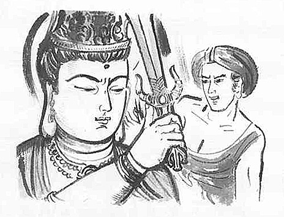

Chunda asked:
"Manjusri, the Tathagata is the most honored and most supreme of the heavens above or among men.
How can such a Tathagata be the same as changing and varying phenomena?
Do you mean, He is just like water bubbles, arising quickly and quickly ceasing?
You should not regard the Tathagata in such a way.
Manjusri, do you speak in that way with understanding the Buddha, or do you speak in that way without understanding Him?
You should not say, only with your realization in your head, that the Tathagata would also be the same as changing and varying phenomena."

"For instance, there is a wealthy elder's son who is sickly and may have a short life, and upon his parents' knowing this, he would not be able to continue the family lineage, and his parents would never again cherish him.
Manjusri, do you see the Tathagata be the same?
If so, there would be no one who could succeed this unchanging unvarying dharma of universal truth.
Manjusri, if one wishes to protect the true dharma, he shall not say that the Tathagata is the same as phenomena or not the same as phenomena.
Rather, he should deeply reflect himself and claim, 'I am now deluded and do not yet possess the wisdom eye.'
The Tathagata's true dharma is inconceivable."